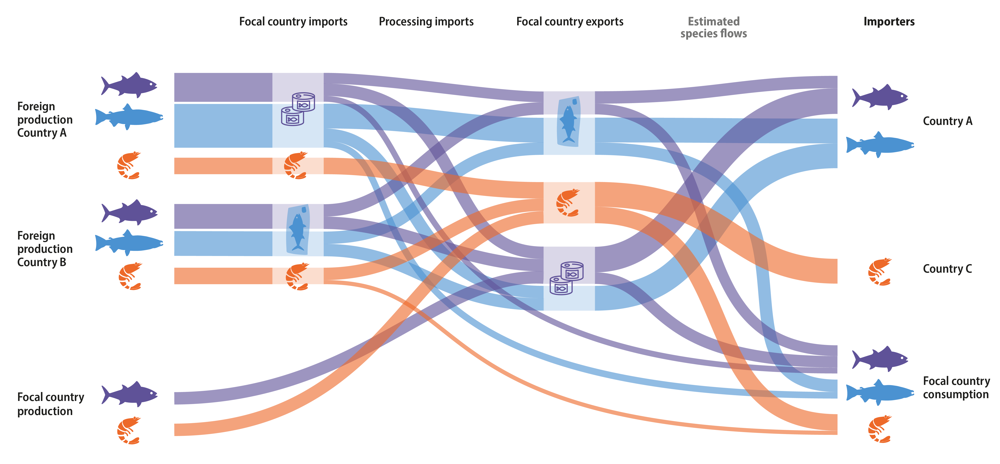

Disaggregating Reported Trade
Estimating species bilateral trade flows occurs in two steps:
- Solving the national production-trade mass balance
- Converting reported commodity trade flow estimates to species trade flow estimates based on the estimated species mix going into each domestic and foreign exported commodity.
National mass-balance

We start with the fact that exports must equal production and imports, minus consumption. Since exports are reported as commodities, we solve this mass balance problem in terms of commodities. Production data are reported for each species, so we estimate the elements of a matrix that represents the proportion of production going into each commodity. Since an imported commodity can be processed and exported as a different commodity, we also estimate the proportion of each import being converted into a different commodity. Then for a given country,
\(e = V_{1} \circ X \cdot p + V_{2} \circ W \cdot g - c + \epsilon\)
If n is the number of species and m is the number of commodities, then: \(V_{1}\) is a sparse (\(m\)×\(n\)) matrix with product conversion factors corresponding to the unknowns in \(X\); \(X\) is a sparse (\(m\)×\(n\)) matrix of the proportion of each species in each commodity; \(p\) is a vector of domestic species production (\(n\)×\(1\)); \(V_{2}\) is a sparse (\(m\)×\(m\)) matrix with product conversion factors corresponding to the entries of \(W\); \(W\) is a (\(m\)×\(m\)) matrix of the processed imported commodities; \(g\) be a vector of imports (\(m\)×\(1\)), \(c\) is a vector of domestic consumption (\(m\)×\(1\)), and; \(\epsilon\) is a vector of error terms (\(m\)×\(1\)).
We compiled reported values for V_1, V_2, e, p and g, and estimate the entries of X, W, c, and ϵ. We first converted this problem to a system of linear equations. Using the property that vec(ABC)=(C^T⊗A)vec(B), we can create A_b=(y^T⊗D_m)D_V, where D_m is a diagonal matrix of ones, with dimension m and D_V is a diagonal matrix with the elements of vec(V). The vector of unknowns is then x_b=vec(Z). We then solve this system of equations with a quadratic optimization solver such that the mass balance equalities are satisfied, trade codes with higher species resolution in X are prioritized, the elements of X, W, and c are otherwise relatively even (i.e., we assume an even distribution of production among commodities unless the data suggests otherwise), that ϵ is as small as possible (i.e., minimize the error), and all unknowns are greater than or equal to zero.
Positive error terms represent situations where reported production and imports cannot explain exports. This can occur due to under- or un-reported production or imports, over-reporting of exports, errors in the live weight conversion factors, or inconsistencies in the year production and trade are attributed to.
We solve the mass-balance problem for each country-year-HS version combination using the Python package “solve_qp.” The estimated species mixes in national production (X), processing of imports (W) and the error term (ϵ) are passed to the next stage of the analysis.
Converting the product trade network to a species trade network
First, we compute the mix of species going into each trade code for each country’s domestic exports. To do this, we reweight X so it represents the proportion of each species in each code rather than the proportion of production of a species going into each product. Each country’s estimated X matrix is multiplied by p to get the mass of each species in each commodity. The total mass of each commodity is found by summing all the species volume grouped by commodity and the proportion of each species within a commodity is then calculated by dividing all volumes by their respective commodity mass totals.
Each country’s exports can be sourced from domestic production, imported products that are subsequently exported, with or without processing (i.e., foreign exports), or from an unknown source (i.e., error exports). Since the mix of these sources cannot be derived from the mass balance equation alone, we calculate a range for sourcing following33. We calculate the maximum possible domestic exports by taking the minimum between the domestic production and total exports. Similarly, we calculated the maximum volume of exports sourced from imports, by taking the minimum between each product’s imports (accounting for processing estimated by W) and exports. The minimum domestic exports are calculated as the minimum between production and the difference in exports and the maximum calculated foreign exports, with the remainder as error exports (minimum foreign exports are calculated in an analogous way). The above results represent midpoint estimates.
- max domestic exportse_(domestic,max) = min(p_domestic domestic production,etotal exports)
- max foreign exportse_(foreign,max) = min(importsg,total exportse)
- min domestic exports e_(domestic,min)= min(pdomestic production,etotal exports - e_(foreign,max) max foreign exports)
- e_(foreign,min) min foreign exports = min(importsg,total exportse - me_(domestic,max) ax domestic exports)
- e_(domestic,mid) midpoint domestic exports = (e_(domestic,max) max domestic exports + e_(domestic,min) min domestic exports)/2
- e_(foreign,mid) midpoint foreign exports = (e_(foreign,max) max foreign exports + e_(foreign,min) min foreign exports)/2
For these three estimates (maximum, minimum and midpoint) we calculate the domestic and foreign weights by dividing domestic export values and foreign export values by total export. We then distribute each country’s exports into domestic, foreign and error exports by multiplying exports by domestic, foreign and error proportions. For each export source, we apply a different species mix to each HS code based on the estimated source country. For domestic exports, we use the exporting country’s estimated X matrix. For error exports, the geographical origin is unknown and may arise from unreported production, so we cannot meaningfully assign a species mix to the code. Consequently, we identify the lowest taxonomic resolution common to all species within the code and assign that name to the trade flow.
For foreign exports, we trace the origins back in the supply chain a maximum of three steps (i.e., producer to intermediate exporter to final exporter to final importer), with any remaining foreign export or flows less than 1 tonne left as “unknown” source. The small flows left unresolved comprise around 1% of total trade.
To link an export of foreign origin to its source country, we use a reweighted version of W to estimate the original imported product codes and connect those to their source country, using a proportional breakdown of each country’s imports of that code. Foreign exports of one country that originated from foreign exports of another country are isolated and undergo the process above to identify the source country. The species mix for foreign trade flows are based on either the source country’s estimated X matrix or the method described above for error exports.

Network post-estimation processing
Once the species trade flow network is built, we remove all volumes traded below 0.1 tonnes, as the multiplication by small proportions generates overly specific, and likely unrealistic, small flows.
Next, to generate a complete time series, we need to compile estimates from across the HS versions. All HS versions are reported since they have been created, for example HS96 reports trade from 1996 until the present. However, the more recent HS versions generally include more specific trade codes and therefore are preferred over older versions. It takes a few years before an HS version is fully adopted, resulting in lower total trade volumes for the first few years an HS version is available compared to the previous HS versions. To provide the most accurate representation of trade, we create a continuous time series by adopting the most recent HS version available after its total trade has met up with the total trade reported under previous HS versions. This results in HS96 being used for 1996 - 2004, HS02 for 2004 - 2009, HS07 for 2010 - 2012 and HS12 for 2013 - 2020.

To check the reasonability of estimated trade flows, we first confirmed that all trade flows sum to the original BACI trade flows when grouped by exporter, importer, year, HS code and expressed as product weight. Note that some flows are slightly lower due to the 0.1 tonne threshold (maximum difference of 72 tonnes representing a percent difference of 0.19%). Second, we confirmed that the estimates from the mass balance problem satisfy the problem constraints. Third, we checked that domestic exports of species in live weight equivalent do not exceed production of that species. Fourth, we confirmed that exports of foreign source do not exceed imports of that species. Only 1.4% of cases across all years showed a country’s foreign export of a species exceeded the total import of that species.
The original text this section is based on is from Gephart et al. (2024) Nature Communications [add link]. Please reference that paper when referencing this information: [Insert reference]